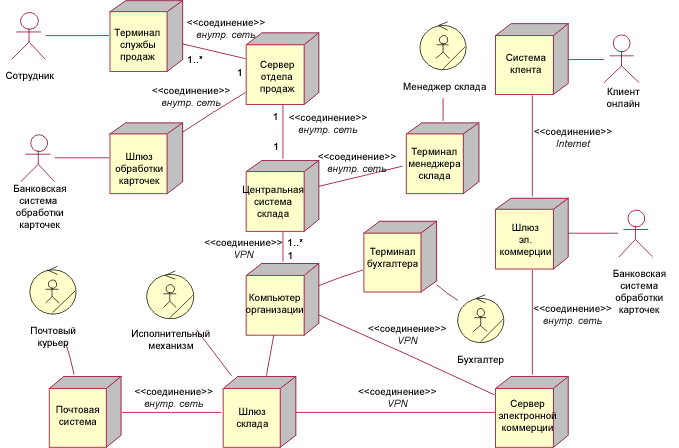

| Концепция: Спецификация компонента |
 |
|
| Связанные элементы |
|---|
ВведениеПри переходе с уровня Анализ на уровень Эскиз необходимо определить эскиз компонента аппаратного и программного обеспечения. Эта спецификация на уровне Эскиз состоит из компонентов, которые должны быть развернуты: аппаратное обеспечение, программное обеспечение и исполнители. Компоненты аппаратного обеспечения определяются с помощью анализа местонахождений, их порожденных параметров и операций базовой подсистемы. С помощью этой информации могут быть выбраны реализации местонахождений на уровне Дескриптора. Диаграммы узла Дескриптора задают компоненты, серверы, рабочие станции, исполнители и так далее, не определяя варианты технологий, реализующих эти компоненты. Рисунок является примером диаграммы узла Дескриптора, которая реализует диаграмму Местонахождение, показанную в Концепция: Местонахождение. Местонахождение реализовано в виде четырех компонентов: шлюза хранилища данных, почтовой системы и двух исполнителей. Узлы дескриптора наследуют параметры от своих местонахождений в процессе размещения и выделения бюджета. 
Аппаратное обеспечениеКомпоненты аппаратного обеспечения реализации, т.е. набор фактически развернутого аппаратного обеспечения, определяются с помощью стоимости/производительности/мощности на панели Дескриптор. Фактически, система может иметь несколько конфигураций аппаратного обеспечения для разных соотношений цена/производительность. Программное обеспечениеКомпоненты определяются указанием набора классов и последующей компиляцией и сборкой исходного кода, связанного с этими классами, в исполняемые файлы. Компонент программного обеспечения должен отражать ряд моментов:
Из этого следует, что информация, необходимая для указания компонентов включает в себя обозрения операций базовых подсистем для местонахождений и их реализованных компонентов аппаратного обеспечения, обозрения выполненных операций для процессов вместе с координацией совместной работы, реализующих операции подсистемы, что составляет набор классов, образующих структуру компонентов. В первом приближении, предположим, что все классы расположены в одном компоненте, реализуя соотношение один-к-одному между компонентом и подсистемой — по умолчанию это рекомендовано в Рекомендации по рабочему продукту: Подсистема эскиза. Далее, найдем причины для последующего разделения компонента. Если набор классов содержит более одного активного класса, представляющего процесс, тогда разделим по одному активному классу (процессу) на компонент, группируя эти классы по взаимосвязям. Некоторые классы могут быть затем использованы во многих компонентах. Если некоторые из этих классов представляют общее состояние в общем наборе экземпляров, к которым имеют доступ несколько компонентов, то их следует выделить в отдельный компонент. Если общими являются классы без сохранения состояния, то можно выделить их в служебный компонент (функциональный компонент без сохранения состояния), если они функционально связаны. Даже пассивную подсистему (без активных классов) можно разделять далее, например, находя повторно используемые подкомпоненты. Завершим процесс, разделив компоненты по определенным технологиям (таким как платформа J2EE™ или Microsoft® .NET), ограничениям памяти (таким как .exe и .dll), ограничениям средств поставки и так далее. В результате мы получим набор определенных компонентов аппаратного и программного обеспечения, составляющих систему. |
© Copyright IBM Corp. 1987, 2006. Все права защищены.. |